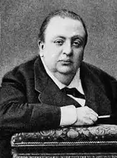

Апухтін Олексій Миколайович (1840/1841? — 1893), російський поет.
Народився 15 (27) листопада 1840 або +1841 в Болхові Орловської губернії. Походив з небагатої дворянської родини, що мала французьке коріння.
Дитячі роки провів у батьківському родовому маєтку Павлодар Козельського повіту Калузької губернії. За характером дуже недовірливий, легко вразливий. Рано виявив неабиякі літературні здібності. Перший вірш, що одержав схвалення І. С. Тургенєва і А. А. Фета, опублікував в 14 років. Навчався в петербурзькому Імператорському училищі правознавства. Відмінно процвітав у навчанні, був одним з редакторів журналу "Училищний вісник". Після закінчення Училища в 1859 деякий час служив в міністерстві юстиції. В 1863-1865 значився чиновником особливих доручень при губернаторі; потім — чиновником міністерства внутрішніх справ. За завданням керівництва кілька разів виїжджав за кордон, проте ніякого службового завзяття не виявив. Переконаний холостяк, екстравагантний і жінкоподібний естет, Апухтін вважав за краще вести спосіб життя сибарита. У середовищі золотої молоді мав репутацію жартівника, дотепного і блискучого імпровізатора. Був завсідником Англійського клубу. Широку популярність здобули також романси П.І. Чайковського та інших російських композиторів, покладені на слова Апухтина ("Забути так скоро" (1870), "Він так мене любив" (1875), "Ні відклику, ні слова, ні привіту" (1875), "День чи панує" ( 1880), "Ночі божевільні" (1886), "Коли так радісно в обіймах твоїх ...", "Чарівні слова любові і оп'яніння ...", "Пара гнідих" і ін.). З 1870-их Апухтін страждав хворобливим ожирінням, яке прийняло колосальні масштаби і "довело його до справжньої убогості". В кінці життя він цілі дні проводив на дивані, пересуваючись з великими труднощами. Помер в Петербурзі 17 (29) серпня 1893 від водянки.